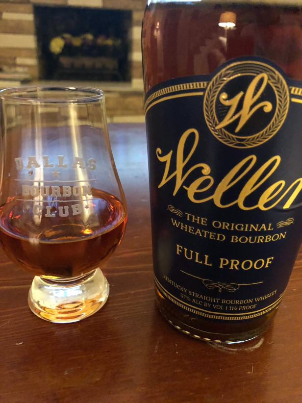

December 27, 2019
Whiskies of the Year 2019
This year saw a lot of new releases that were aimed at the masses and not just expensive limited
releases. Some major
brands created permanent line extensions designed to be enjoyed by all. Just as exciting, up and
comers finally are
putting out their own distillate rather than sourced products. 2019 was an excellent year in
American Whiskey because it
was a year for everyone: not just the bourbon glutton.

As I do every year, I'll need to make a slight disclaimer: this list is compiled over the course of a
year and is only
based on whiskey that I have personally obtained. I'm still waiting for Buffalo Trace to send me a
BTAC
sample kit, so
until then, please do not think of this list as a completely exhaustive retrospective on American
whiskey in 2019.
Best Everyday Drinker
- Old Forester Rye Whiskey
- Four Roses Small Batch Select
- Heaven Hill Bottled in Bond Seven Year
- Wild Turkey 101
This was pretty much a slam dunk. Four Roses Small Batch Select is a fantastic blend of Kentucky
bourbons that just
blows me away day in and day out. It's priced fairly, you can find it anywhere, and it's delicious. I've
kept Four Roses
Small Batch Select on my bar since it hit the state of Texas. I love this bourbon. At the end of a long
day, Four Roses
Small Batch Select is a great option you can enjoy and not feel guilty about.
Best Local Single Barrel
- Lakewood Medallion's Russell's Reserve (aka Lost & Found)
- Goody Goody's Four Roses OESK
- Hall's Russell's Reserve
- Lakewood Medallion's Buffalo Trace (aka MAV JUICE)
Is this one even close? It has to be Lakewood Medallion's Buffalo Trace. From the taste, to the
price,
to the
communities reaction, Mav Juice made a splash. I'm not sure there was a single, locally whiskey released
whiskey that
had people going absolutely ga-ga like Mav Juice did. Yes, I'm pretty biased because I helped select it,
but I think
it's pretty safe to say that Mav Juice blew a lot of folks out of the water. It was pretty awesome to
see this bottle
become a pseudo-enigma.
The Worst of 2019
- Legent
- Barrel Bourbon Single Barrel - Oak Liquor Cabinet
- Woodford Reserve Wheat Whiskey
- Parker's Heritage Heavy Char Rye
It's a good sign when you have to think hard about the worst thing that you had this year. And
unfortunately, that
dubious honor belongs to Legent. Beam's ambitious project just really fell flat for me. Not a fan
at
all.
The Best Whiskey of 2019
- Michter's Barrel Strength Rye
- Barrel Bourbon Batch 16
- Weller Full Proof
- Kentucky Owl Rye Batch #3
- Angel's Envy Cask Strength Bourbon
I had some outstanding whiskey this year, but nothing makes me stop down and go "whoah" like Weller
Full
Proof does.
Weller Full Proof takes everything wonderful about bourbon and then it makes it better. It's complex,
it's got great
structure and one delicious and rich finish. I have to admit that I was very dubious of Buffalo Trace's
launch of this
product: does 3.5% more alcohol really do that much? And the answer was a resounding YES. I really hope
that this one
gets a little more of a wider release next go round, because this was the best thing that came out in
2019.